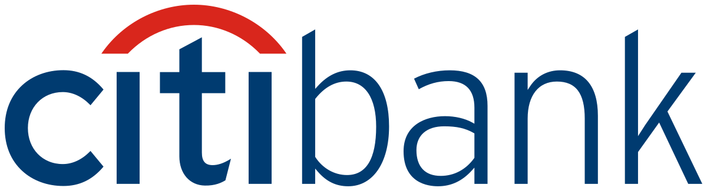
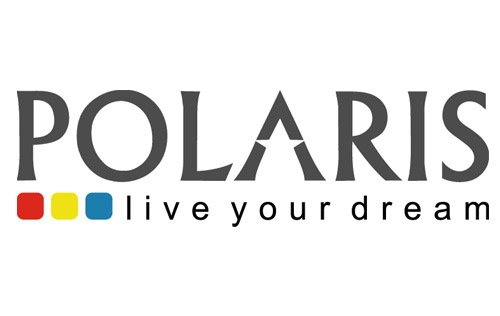
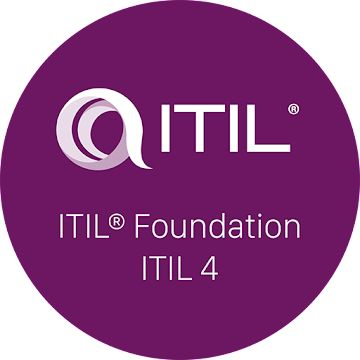
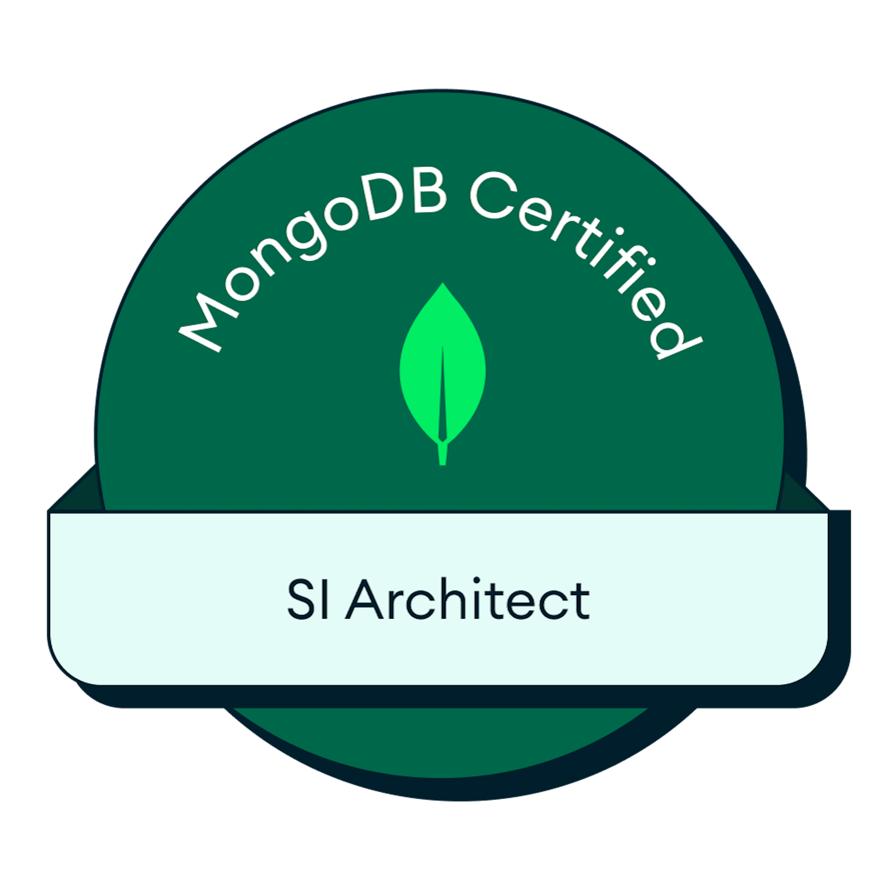
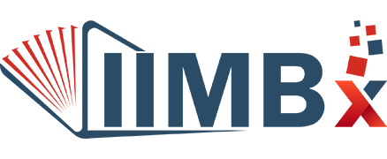

Grounded in enterprise data
RAG pipeline design over vector search, so model output is anchored in the organization's own context.
AI Architect · GenAI Solutions Architect
16+ years architecting and delivering enterprise platforms for global financial clients — Citibank APAC, Citibank India, and USAA. I bring enterprise-grade governance, security, and reliability to AI adoption in regulated environments.
Post Graduate Program in AI & Machine Learning — Caltech CTME
01 — About
I'm an AI / GenAI Solutions Architect with 16+ years architecting, delivering, and managing enterprise applications for large-scale financial clients. Today I focus on designing production-grade LLM, RAG, and agentic systems — and on the governance, security, and reliability that make AI adoption work in regulated environments.
02 — AI Architecture
3+ years architecting AI-based products and advising large financial clients on integrating GenAI into enterprise BAU applications — from retrieval and orchestration through to governance.
The stack I design & govern
RAG pipeline design over vector search, so model output is anchored in the organization's own context.
Autonomous agents that interpret, generate, and refine their own output iteratively — built on LangGraph and MCP.
Multi-model orchestration and routing across OpenAI and Claude, with prompt-engineering patterns that maximize accuracy.
AI usage governance, guardrails, and evaluation — shaped by 16+ years of delivery for banks where security and compliance are non-negotiable.
An agentic Design-to-Code platform I designed and built, converting Figma designs into production-ready React, Angular, Next.js, and CMS code.
03 — Citibank
Manager, Citibank N.A. · Aug 2018 – Sep 2021 — strategic and technical owner of the content management platform, DEV through PROD.

Reliable, secure, and compliant content management for Citi across Asia-Pacific — modernized, hardened, and upgraded end to end while staying live.
Markets served
Re-architecture
Designed and led the team to re-architect the entire legacy codebase into microservices, with one shared business layer serving both legacy SOAP and new REST.
Drove the codebase to a clean security scan by embedding secure-coding standards and comprehensive code reviews into delivery.
Upgraded RHEL, WAS, IHS, database, Documentum, and Captiva across every market — coordinating multiple teams through to completion.
Owned End-of-Life and End-of-Vendor-Support upgrades, ran cross-team Disaster Recovery drills, and delivered within mandated change windows.
Served as Proxy Product Owner — owning BAU, enhancements, and environment compliance, and bridging business and technology priorities.
Built and mentored high-performing development teams to deliver critical, time-sensitive projects in a highly regulated environment.
Delivered a Documentum 6.5 Document Tracking and Data Entry Workflow solution, and led integration of a Single Account Opening Form spanning Banking, Credit Card, Personal Loan, and Mortgage products.
04 — More highlights
Centralized Hyperledger Fabric setup and administration, reducing environment provisioning from ~3 weeks of error-prone manual effort to 30 minutes.
Built a multithreaded migration job that moved 3.5 million documents in 8 hours between storage platforms.
ETL, REST API, Angular, and Highcharts dashboard tracking work time, idle time, and per-task effort for task-level productivity analysis.
05 — Core competencies
RAG pipeline design, agentic workflows (LangGraph, MCP), multi-model orchestration, prompt engineering, and AI usage governance for regulated environments. Advising on GenAI integration with enterprise BAU applications.
Full SDLC and ITIL lifecycle — strategy, design, transition, operation, and continual improvement. Architecting, migrating, and upgrading enterprise content management at scale.
Evaluating use cases and architecting secure, scalable, compliant solutions on Hyperledger Fabric, Ethereum, and Corda, integrated into clients' existing workflows.
Owning products DEV through PROD — BAU, enhancements, DR, compliance, and upgrades. Building and mentoring distributed teams; standardizing runbooks, SOPs, and automation.
06 — Experience
HCLTech
Architect of AI-driven engineering platforms, leading GenAI and blockchain solution design for enterprise clients. Own architecture, design patterns, and AI governance from concept to production deployment.
Citibank N.A.
Strategic and technical leader for the content management platform serving 9 APAC countries — Australia, China, Hong Kong, Singapore, Thailand, Malaysia, Vietnam, Philippines, and Indonesia — in a highly regulated banking environment.
HCLTech
Led delivery of enterprise content management projects — requirement gathering, project planning, and onsite-offshore coordination, including extended onsite engagements working directly with clients.

Polaris FT
Delivered an enterprise document workflow solution for Citibank India, implementing EMC Documentum 6.5 SP3 for the Citi Wealth Advisory business.
07 — Technical skills
08 — Credentials
Caltech CTME
Anand Institute of Higher Technology, Anna University
Outstanding rating for 4 consecutive years at HCLTech.
Outstanding rating for 4 consecutive years at HCLTech.
Outstanding performance for Citibank on the Auto Fulfillment Unit project at Polaris.



09 — Contact
Open to conversations on GenAI architecture, agentic platforms, and AI adoption in regulated industries.